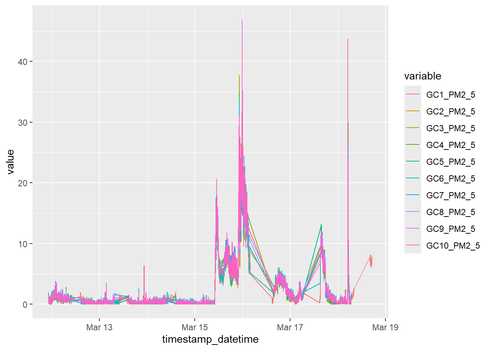
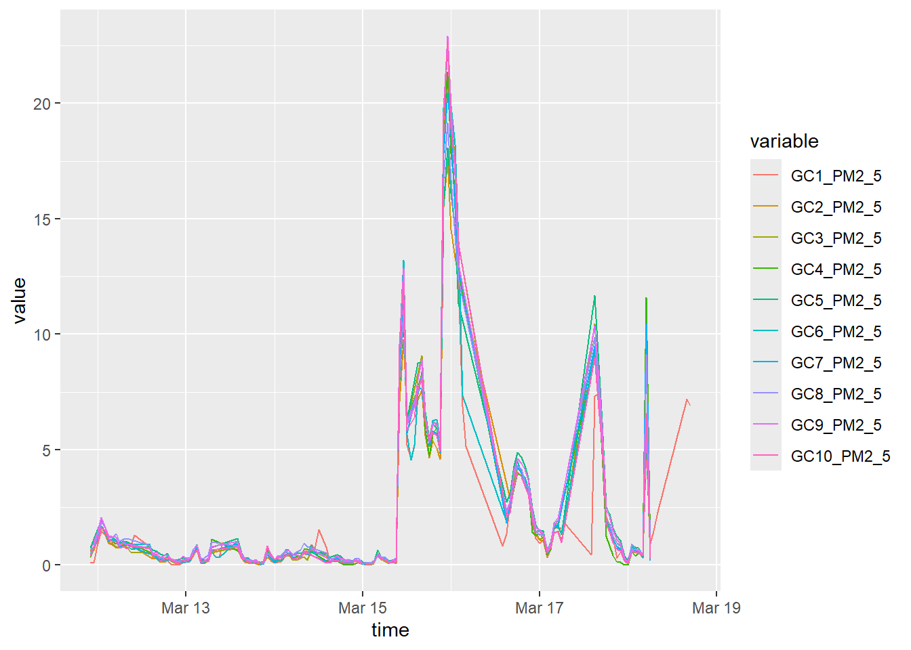

── Conflicts ────────────────────────────────────────── tidyverse_conflicts() ──
✖ dplyr::filter() masks stats::filter()
✖ dplyr::lag() masks stats::lag()
ℹ Use the conflicted package (<http://conflicted.r-lib.org/>) to force all conflicts to become errors
library(RODBC)library(reshape2)
Attaching package: 'reshape2'
The following object is masked from 'package:tidyr':
smiths
library(ggplot2)library(GGally)
Registered S3 method overwritten by 'GGally':
method from
+.gg ggplot2
Read in sensor data
#Read in each day's data as separate dataframe per sensor.wb <-"C:/Users/jacks/Documents/UNM/P30/AIRWISE/Calibration_data/PA Test Combined Deming-20241017T173437Z-001/PA Test Combined Deming/GC9_4C97 All Deming.xlsb"#change filepath as needed, separate spreadsheet for each sensorcon2 <-odbcConnectExcel2007(wb)day1 <-sqlFetch(con2, "20240311")day2 <-sqlFetch(con2, "20240312")day3 <-sqlFetch(con2, "20240313")day4 <-sqlFetch(con2, "20240314")day5 <-sqlFetch(con2, "20240315")day6 <-sqlFetch(con2, "20240316")day7 <-sqlFetch(con2, "20240317")day8 <-sqlFetch(con2, "20240318")
For each sensor, merge daily dataframes into single dataframe
write.csv(gc9, "C:/Users/jacks/Documents/UNM/P30/AIRWISE/Calibration_data/Deming_analysis/GC9/GC9.csv", row.names=FALSE) #change filepath as needed
Subset for data we want (time and pm2.5 concentration)
gc9f <- gc9[c("UTCDateTime", "pm2_5_atm")]
Format column names
colnames(gc9f) <-c("time", "GC9_PM2_5")
Write formatted sensor dataframe to csv
write.csv(gc9f, "C:/Users/jacks/Documents/UNM/P30/AIRWISE/Calibration_data/Deming_analysis/GC9/GC9pm.csv", row.names=FALSE) #change filepath as needed
Generate time sequence
#create time sequence of every second from 2024-03-11 to 2024-03-19 time_sequence <-seq(from =as.POSIXct("2024-03-11 00:00:00", tz ="UTC"),to =as.POSIXct("2024-03-19 00:00:00", tz ="UTC"),by ="sec")
#loop through list of sensor dataframes, format timestamp column from character to date-time formatfor (x inseq_along(my_data)) { df <- my_data[[x]] df$timestamp_clean <-sub("z$", "+0000", df$time) df$timestamp_datetime <-as.POSIXct(df$timestamp_clean, format ="%Y/%m/%dT%H:%M:%S%z", tz ="UTC") my_data[[x]] <- df}
Join each sensor data to time series so all records are temporally concurrent
#Transpose data to long format so we have 3 columnsfor plotting (time, sensor ID, and PM2.5)datacomb_format_clean_long <-melt(datacomb_format_clean, id.vars ="timestamp_datetime", variable.name ="variable", value.name ="value")
Plot data
ggplot(datacomb_format_clean_long, aes(timestamp_datetime, value, group = variable, color = variable)) +geom_line(data=datacomb_format_clean_long[!is.na(datacomb_format_clean_long$value),])

Plot indicates that there is slight variance, but overall strong agreement between sensors across time.
#Data summarysummary(datacomb_format_clean)
timestamp_datetime GC1_PM2_5 GC2_PM2_5
Min. :2024-03-11 22:22:40.00 Min. : 0.000 Min. : 0.000
1st Qu.:2024-03-13 15:41:37.00 1st Qu.: 0.120 1st Qu.: 0.100
Median :2024-03-14 23:50:06.00 Median : 0.550 Median : 0.420
Mean :2024-03-15 01:07:49.86 Mean : 2.194 Mean : 1.834
3rd Qu.:2024-03-16 18:21:20.25 3rd Qu.: 1.930 3rd Qu.: 1.450
Max. :2024-03-18 17:15:41.00 Max. :40.220 Max. :36.000
NA's :28156 NA's :28910
GC3_PM2_5 GC4_PM2_5 GC5_PM2_5 GC6_PM2_5
Min. : 0.000 Min. : 0.000 Min. : 0.000 Min. : 0.00
1st Qu.: 0.140 1st Qu.: 0.128 1st Qu.: 0.260 1st Qu.: 0.21
Median : 0.490 Median : 0.445 Median : 0.710 Median : 0.64
Mean : 2.296 Mean : 2.119 Mean : 2.266 Mean : 2.37
3rd Qu.: 1.712 3rd Qu.: 1.520 3rd Qu.: 2.020 3rd Qu.: 1.86
Max. :43.230 Max. :38.880 Max. :38.720 Max. :38.95
NA's :28650 NA's :28790 NA's :28740 NA's :28420
GC7_PM2_5 GC8_PM2_5 GC9_PM2_5 GC10_PM2_5
Min. : 0.000 Min. : 0.000 Min. : 0.000 Min. : 0.000
1st Qu.: 0.120 1st Qu.: 0.240 1st Qu.: 0.220 1st Qu.: 0.150
Median : 0.470 Median : 0.660 Median : 0.660 Median : 0.510
Mean : 1.975 Mean : 2.163 Mean : 2.460 Mean : 2.265
3rd Qu.: 1.530 3rd Qu.: 1.830 3rd Qu.: 2.087 3rd Qu.: 1.750
Max. :36.790 Max. :39.910 Max. :46.910 Max. :43.750
NA's :28870 NA's :28800 NA's :28680 NA's :28680
Slight variance in reported PM2.5 values. Relative strong agreeement in mean recorded PM2.5, with larger variance observed in max recorded value (+- 10 ug/m3 PM2.5).
ggplot(datacomb_agg_long_1hr, aes(time, value, group = variable, color = variable)) +geom_line(data=datacomb_agg_long_1hr[!is.na(datacomb_agg_long_1hr$value),])

Test for sensor agreement through pairwise correlations
Warning: Removed 146 rows containing non-finite outside the scale range
(`stat_density()`).
Warning: Removed 146 rows containing missing values or values outside the scale range
(`geom_point()`).
Removed 146 rows containing missing values or values outside the scale range
(`geom_point()`).
Removed 146 rows containing missing values or values outside the scale range
(`geom_point()`).
Removed 146 rows containing missing values or values outside the scale range
(`geom_point()`).
Warning: Removed 153 rows containing missing values or values outside the scale range
(`geom_point()`).
Warning: Removed 146 rows containing missing values or values outside the scale range
(`geom_point()`).
Removed 146 rows containing missing values or values outside the scale range
(`geom_point()`).
Removed 146 rows containing missing values or values outside the scale range
(`geom_point()`).
Warning: Removed 133 rows containing non-finite outside the scale range
(`stat_density()`).
Warning: Removed 134 rows containing missing values or values outside the scale range
(`geom_point()`).
Warning: Removed 133 rows containing missing values or values outside the scale range
(`geom_point()`).
Removed 133 rows containing missing values or values outside the scale range
(`geom_point()`).
Warning: Removed 124 rows containing non-finite outside the scale range
(`stat_density()`).
Warning: Removed 124 rows containing missing values or values outside the scale range
(`geom_point()`).
Removed 124 rows containing missing values or values outside the scale range
(`geom_point()`).